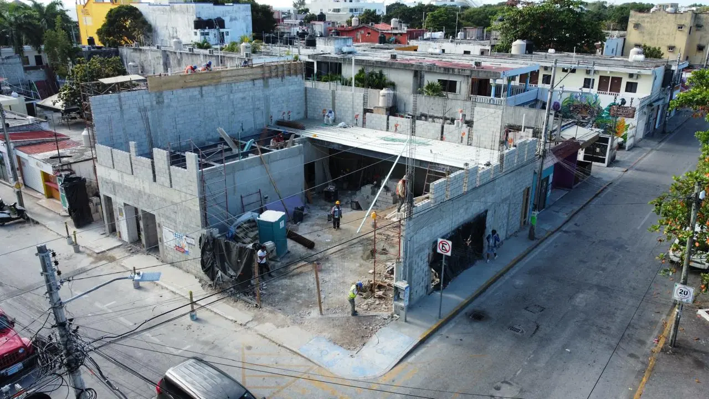

Civil work, installations and medical-grade finishes for healthcare units in Playa del Carmen, built against the room schedule that health regulation requires — not the other way round.

Playa del Carmen holds the largest private outpatient market in the state after Cancún, and the one most oriented to foreign patients: dental and aesthetic clinics serving medical tourism in the centre and along 30th Avenue, specialist consulting rooms clustered around the private hospitals, and urgent care for a resident population growing faster than its health infrastructure. Almost every project here is converting a commercial unit to medical use — which is a change of activity, not a refurbishment.
Our contract covers construction: masonry, installations, climate control and filtration, continuous-surface finishes with coved skirting, doors with clear widths for a stretcher, hands-free taps, the RPBI waste room and the service provisions for medical equipment. The medical gas system, the shielding of any imaging room and the regulatory filing itself sit with certified specialists. Their test dates go into the programme from the start, not at the end.
Health: notice or licence, sanitary responsible, RPBI waste handling and, where applicable, radiological safety. Municipal: land use compatible with healthcare, construction licence, Director Responsable de Obra and official number. Civil Protection: exits, widths, emergency lighting, signage, extinguishers and an evacuation plan that works for patients who cannot leave unaided. All three start in the first month; leaving Civil Protection to the end is the single most common reason an opening date slips.
| Scope | What it covers | Cost 2026 |
|---|---|---|
| Consulting clinic fit-out | Civil work, installations, washable seamless finishes | $14,000 – $24,000 MXN / m² ($780 – $1,300 USD / m²) |
| Dental practice | Suction, compressed air, treated water, sealed surfaces | $20,000 – $38,000 MXN / m² ($1,100 – $2,100 USD / m²) |
| Clinic with procedure rooms and CSSD | Dirty-to-clean flow, sterilisation, ventilation | $25,000 – $45,000 MXN / m² ($1,400 – $2,500 USD / m²) |
| Day surgery with operating theatre | Clean area, medical gas outlets, recovery | $40,000 – $75,000 MXN / m² ($2,200 – $4,200 USD / m²) |
| Radiological shielding, per room | Design, installation and documentation | $150,000 – $500,000 MXN ($8,300 – $27,800 USD) |
| Medical gas pipeline system | Distribution, alarms, testing and certification | $300,000 – $1,200,000 MXN ($16,700 – $66,700 USD) |
| Generator with automatic transfer | Small facility | $200,000 – $500,000 MXN ($11,100 – $27,800 USD) |
Ranges for civil work, installations and medical-grade finishes, excluding medical equipment. The items that move the total most are filtered air conditioning, continuous-surface finishes and the special installations. Shielding and medical gas are quoted separately because a certified specialist executes them.
Continuous-surface flooring — heat-welded sheet vinyl or resin — with coved skirting; walls coated to resist disinfectants; sealed ceilings in critical areas; no open shelving in procedure rooms. A hands-free basin in every clinical area, doors with clear width for a stretcher and a wheelchair, and air conditioning with the filtration and pressure regime each area requires. Ordinary commercial specification does not comply and, more to the point, does not work clinically.
In Solidaridad the first thing to verify is that the land use of that specific unit admits healthcare. It is the filter that stops more projects than any other, and it is resolved before signing the lease, not after. Civil Protection requirements for premises with patients are also heavier than for a shop of the same size.
Most clinic extensions and refurbishments happen without closing. We work in isolated zones behind sealed hoarding with dust control, define a construction route that never crosses patient circulation, and schedule noisy work in windows agreed with the medical director. Water and power shutdowns are planned in writing weeks ahead, because in a medical unit an unannounced interruption has clinical consequences, not just commercial ones.
Related pages: Clinics across the Riviera Maya · Commercial and hotel construction · Permits and licences · Site supervision
196+ completed projects. Fixed-price contracts. Reply in 2 minutes.
Ask on WhatsApp